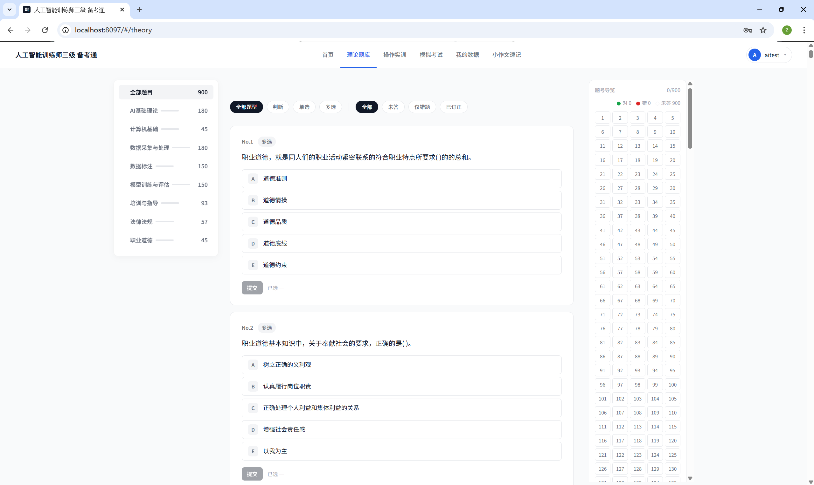
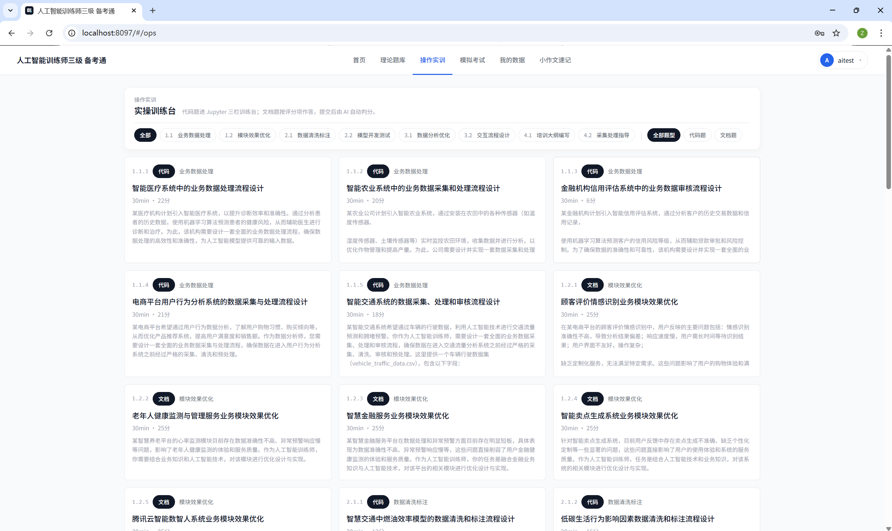
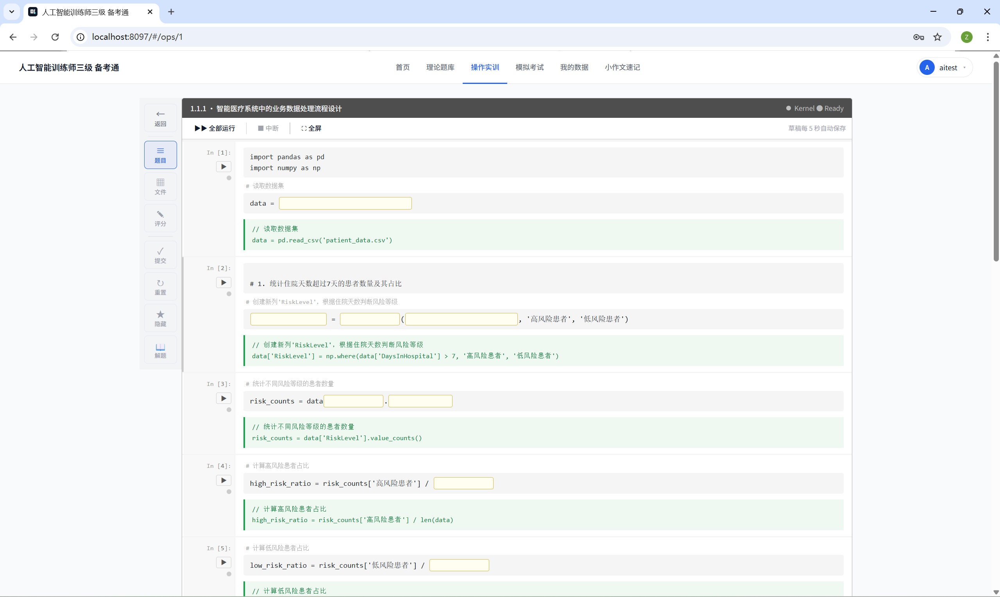
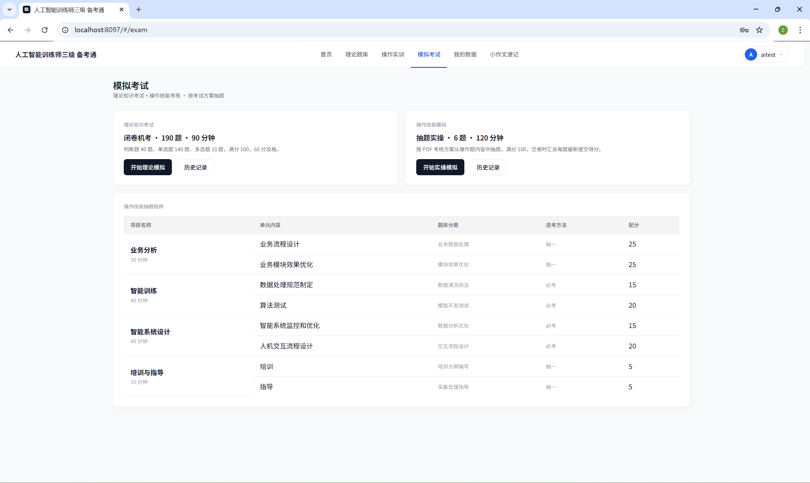

我花了 2 天时间，做了个《人工智能训练师三级》一站式备考考试系统。
900 道理论题、40 道操作题、模拟考试、错题复盘、本地账号和进度记录，全部跑在浏览器里，Docker Compose 一行起来。
先把读者最关心的那个问题摆在前面——
这个考试系统能不能一站式解决《人工智能训练师三级》备考练习问题？能。
从刷题、实操、模拟、复盘到进度记录，这条链路已经基本收住。
身边不少同事朋友都在备考这门，卡住的从来不是某一道题，而是题库、附件、Notebook、进度，全散在七八个地方。
每次打开备考都得先理一遍："上次做到哪？错题在哪？操作题数据集解压到哪个目录了？" 还没开始练，半小时就过去了。
我的判断很直接：真正能让人坚持练下去的备考工具，不是题更多，而是把"开始练"这一步的摩擦砍到 0。
打开浏览器，登录本地账号，刷题刷题、操作练操作，记录自动留着。

操作题是我自己最满意的一块。
40 道题，20 道代码题、20 道文档题。
按业务数据处理、数据清洗标注、模型开发测试、数据分析优化、交互流程设计、培训大纲编写这几个方向分。

代码题直接在服务器里跑代码。
界面是 Jupyter Notebook 的手感：左边题干和评分点，中间代码单元，右边参考指引和解析，附件在同一个工作区里就能取。

CSV、XLSX、DOCX、图片、ONNX 模型，需要哪个直接点开，不用回到桌面找文件夹。
这点对备考很关键：平时怎么练，考试就怎么做，手感不会突然换一套。
理论题库 900 道，覆盖人工智能基础理论、数据采集与处理、数据标注、模型训练与评估。
还有培训与指导、法律法规、职业道德、计算机基础几个模块。
可以按知识模块筛，也可以按判断、单选、多选筛。错题自动汇总，单独拉出来复盘。
刷题真正有用的地方，不是"我今天做了多少道"，而是"我到底还有哪些地方没掌握"。
理论模拟按闭卷机考节奏抽题，实操模拟按操作技能考核方案走。
提前熟悉时间压力、题目切换、交卷流程。平时慢慢补，考前用模拟考拉一遍节奏，心里会稳很多。

项目已经开源：
https://github.com/zizhongxiao-svg/ai-trainer-level3-lab
会 Docker 的同学三行就能起来：
git clone https://github.com/zizhongxiao-svg/ai-trainer-level3-lab.git cd ai-trainer-level3-lab docker compose up --build
浏览器打开 http://localhost:8097，看到的就是这个登录页：
登录页：本地账号 + 公众号「AI 新鲜资讯」扫码入口
注册一个本地账号就能开始练，所有进度、错题、操作题草稿都存在自己机器上，不上传任何服务器。
不想折腾环境，留言或者私信我要 Docker 安装包，一键起来。
写在最后
这个系统不复杂，但它把《人工智能训练师三级》备考里最容易打断人的事情——找题、找附件、配环境、记进度——一把收住了。
行动建议很简单：会折腾环境就直接 git clone 自己跑；不想折腾就留言或私信我要 Docker 安装包。
后面会按反馈继续补题、加解析视频、打通错题导出，欢迎在公众号后台拍砖。
真正舒服的备考工具，不一定要很炫，但要让你能连续练下去。